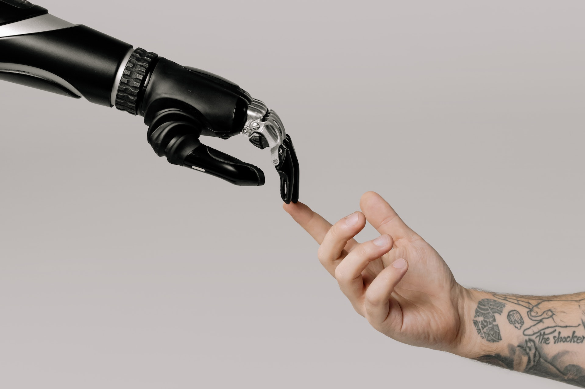
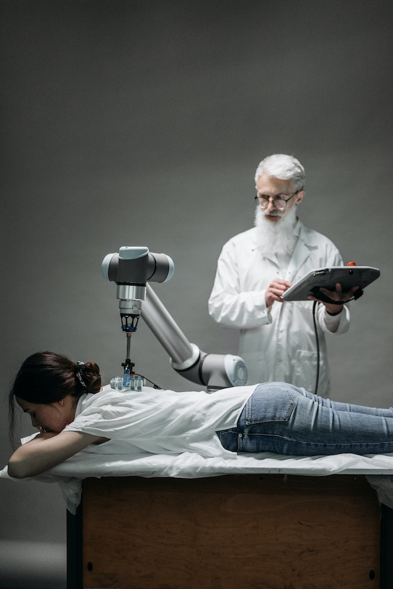
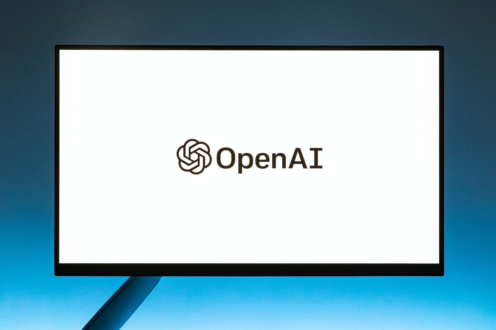

A inteligência artificial (IA) é...
Um campo da ciência da computação que se concentra em criar sistemas capazes de realizar tarefas que normalmente exigiriam inteligência humana. O objetivo da IA é desenvolver algoritmos e modelos que possam aprender, raciocinar, perceber, entender e tomar decisões de forma autônoma.
Quando surgiu a ideia da inteligência artificial?
Os fundamentos da inteligência artificial remontam à década de 1950, quando pesquisadores começaram a explorar a ideia de criar máquinas capazes de simular habilidades humanas. Desde então, a IA evoluiu significativamente, e várias abordagens foram desenvolvidas para alcançar esse objetivo.
Quais foram os principais tipos incluidos?
- IA baseada em regras: Nesse tipo de abordagem, as máquinas são programadas com regras e instruções específicas para realizar tarefas. Embora possam ser eficazes para problemas específicos, elas têm limitações em lidar com complexidade e mudanças imprevistas.
- IA simbólica: Utiliza representações simbólicas do conhecimento para resolver problemas complexos. Essas representações são frequentemente expressas em termos de lógica formal.
- Aprendizado de máquina (Machine Learning - ML): É uma abordagem mais moderna em que os algoritmos são projetados para aprender a partir de dados. Existem três principais paradigmas de ML: Aprendizado supervisionado: Os algoritmos são treinados em um conjunto de dados rotulados para fazer previsões ou classificações em novos dados. Aprendizado não supervisionado: Os algoritmos identificam padrões e estruturas em conjuntos de dados não rotulados, como agrupamentos de dados sem informações prévias sobre suas categorias. Aprendizado por reforço: Os algoritmos aprendem por meio de tentativa e erro, recebendo feedback em forma de recompensas ou penalidades, para melhorar o desempenho ao longo do tempo.
- Redes neurais artificiais: São modelos inspirados na estrutura do cérebro humano, consistindo em camadas de unidades interconectadas chamadas neurônios. As redes neurais têm sido especialmente bem-sucedidas em tarefas de processamento de imagem, reconhecimento de fala e tradução automática.
- Aprendizado profundo (Deep Learning): É uma subárea do aprendizado de máquina que utiliza redes neurais profundas com várias camadas para aprender representações complexas dos dados. O aprendizado profundo tem sido revolucionário em muitas aplicações, como visão computacional e processamento de linguagem natural.
Quais são os principais impactos da IA na nossa vida?
Os avanços em inteligência artificial têm impactado uma ampla gama de setores, incluindo saúde, transporte, finanças, educação, entretenimento e muito mais. As possibilidades futuras da IA são emocionantes, mas também levantam questões éticas e sociais, como privacidade, desigualdade, viés algorítmico e o futuro do trabalho.
O que é a Open AI
A OpenAI é uma organização de pesquisa em inteligência artificial sem fins lucrativos e também uma empresa com fins lucrativos fundada em dezembro de 2015. Seu objetivo é desenvolver e promover a inteligência artificial amigável e benéfica para a humanidade. A organização foi criada com a missão de garantir que os benefícios da IA sejam distribuídos de forma ampla e equitativa, enquanto minimiza os riscos potenciais associados à tecnologia.
A OpenAI é conhecida por ter desenvolvido e lançado modelos de linguagem de ponta em inteligência artificial, como o CHAT GPT (Generative Pre-trained Transformer). Esses modelos de IA são capazes de realizar tarefas diversas, como processamento de linguagem natural, tradução automática, geração de texto e muito mais.
Ao longo dos anos, a OpenAI lançou várias versões do GPT, sendo o GPT-3 (baseado na arquitetura GPT-3.5) um dos mais avançados até então. Esses modelos geralmente são treinados em grandes quantidades de dados e podem produzir resultados notáveis em várias aplicações.
Queres saber uma curiosidade?
O primeiro robô com características que podemos associar à inteligência artificial moderna foi chamado de "Unimate". Ele foi desenvolvido por George Devol e Joseph Engelberger na década de 1950 e patenteado em 1961. O Unimate era um robô industrial projetado para operar em uma linha de produção de uma fábrica e executar tarefas repetitivas.
Embora o Unimate seja considerado um marco importante na história da robótica e automação, é importante ressaltar que suas capacidades eram limitadas em comparação com o que consideramos IA hoje. O Unimate era programado usando um conjunto fixo de instruções e não possuía a capacidade de aprender ou se adaptar a novas situações, como os sistemas de inteligência artificial contemporâneos.
A evolução da inteligência artificial e dos robôs inteligentes continuou ao longo das décadas, impulsionada por avanços em ciência da computação, algoritmos de aprendizado de máquina e hardware mais poderoso. Hoje, vemos uma ampla variedade de robôs e sistemas com recursos de IA em várias indústrias e aplicações, desde assistentes virtuais em smartphones até robôs avançados utilizados em exploração espacial e cirurgias médicas.
Para acabar...
Em suma, a inteligência artificial é uma área dinâmica e em constante evolução, que busca replicar a inteligência humana através de sistemas computacionais para resolver problemas e melhorar a vida das pessoas.